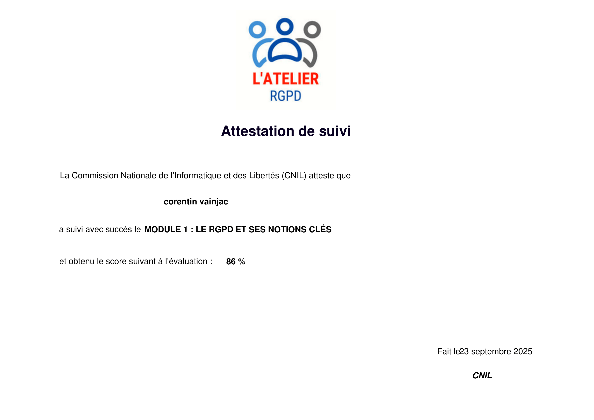
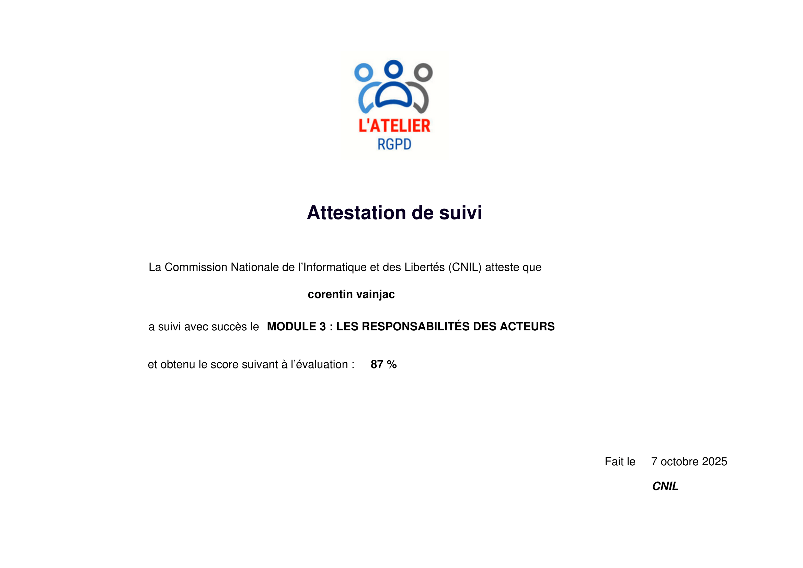
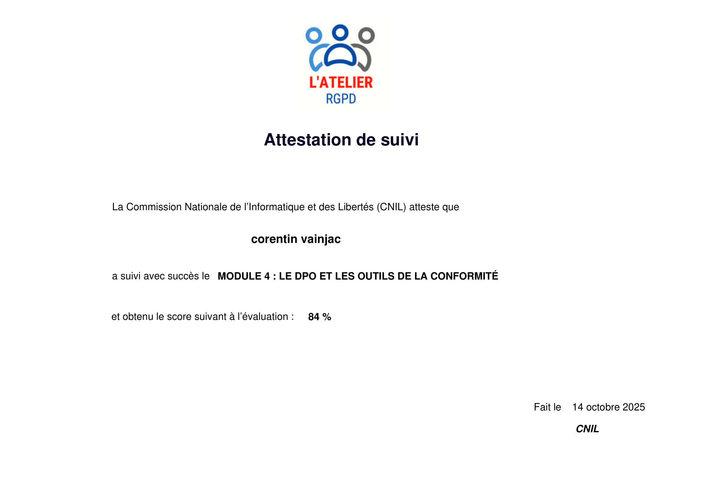
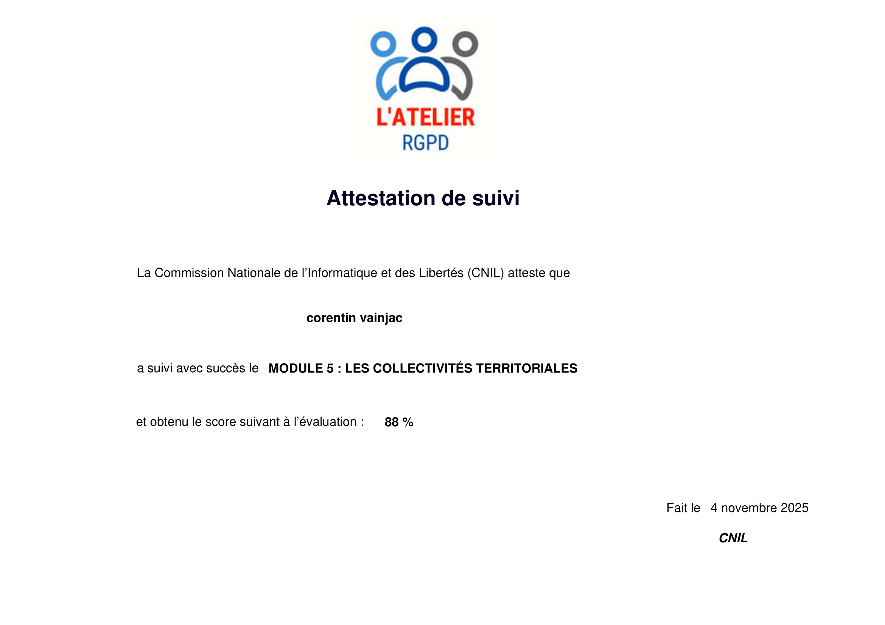
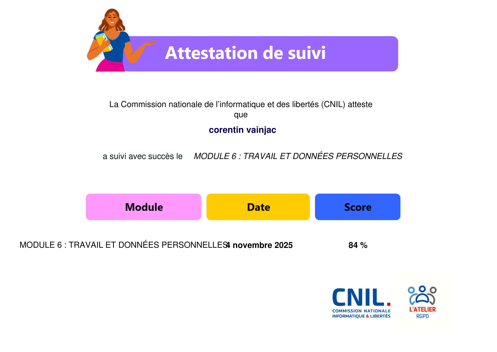

Corentin Vainjac
À propos
Corentin Vainjac
Étudiant en BTS SIO option SISR, je me spécialise dans les solutions d'infrastructure, systèmes et réseaux.
Télécharger mon CVStage
Tuteur de stage : Frank Fayolle
Tél : 04 77 92 04 25
Télécharger le dossier de stage
Evolution42 · Stage
15 juin 2026 – 24 juillet 2026 · 6 semaines
Saint-Paul-en-Jarez, Auvergne-Rhône-Alpes, France · 42271
Semaine 1
Découverte de l'entreprise. Assistance au support technique pour l'installation et la configuration d'un routeur et d'un NAS. Préparation, configuration et installation d'un PC à l'aide de sauvegardes, conformément aux exigences du client. En fin de semaine, finalisation et vérification du bon fonctionnement des équipements installés.
Semaine 2
Durant cette semaine, j'ai principalement effectué les contrôles des sauvegardes Beemo. J'ai également réalisé des transferts de données vers de nouveaux postes conformes aux exigences des clients, ainsi qu'une assistance au support technique.
Semaine 3
Durant cette semaine, j'ai préparé et configuré des sauvegardes Beemo, participé à la destruction sécurisée de disques durs contenant des données clients, assisté le support technique dans la résolution des problèmes des clients et effectué des réparations sur leurs ordinateurs.
Semaine 4
Durant cette semaine, j'ai effectué plusieurs missions. J'ai préparé et installé un PC, puis assuré le transfert des données vers un nouveau poste. J'ai également apporté une assistance au support technique, installé un switch dans une baie de brassage, participé à la configuration de SharePoint et géré les adresses e-mail d'un client.
Semaine 5
Au cours de cette semaine de stage, j'ai réalisé plusieurs missions auprès de différents clients notamment avec la résolution d'un problème empêchant le lancement des sauvegardes Beemo, avec une intervention directement sur site. Assistance au support technique pour le paramétrage des adresses IP sur des clients légers fonctionnant sous Linux Axel. Installation et configuration de l'antivirus ESET au sein d'une entreprise, en veillant à réaliser un paramétrage propre et adapté aux besoins du client.
Semaine 6
Durant cette dernière semaine de stage, j'ai principalement préparé des postes informatiques selon les besoins des clients en suivant les fiches techniques. J'ai également participé à la maintenance de copieurs, notamment en installant et en mettant à jour les pilotes d'impression, ainsi qu'en intégrant de nouvelles imprimantes au domaine de l'entreprise fin de garantir leur bon fonctionnement sur le réseau.
Tuteur de stage : Patrice Margot
Tél : 04 77 95 33 99
Télécharger le dossier de stage
Ediaca · Stage
9 novembre 2026 – 18 decembre 2026 · 6 semaines
Talaudiere, Auvergne-Rhône-Alpes, France · 42350
Semaine 1
Lors de ma première semaine de stage chez Ediaca à Saint-Étienne, j'ai commencé par découvrir l'entreprise, son fonctionnement ainsi que les différents services qui la composent. J'ai pu me familiariser avec les locaux, rencontrer les membres de l'équipe et découvrir leur rôle au sein de l'entreprise. J'ai notamment effectué quelques missions telles que des installations de logiciels et de la maintenance de SI
Semaine 2
Durant la deuxième semaine de mon stage, j’ai effectué le rangement et le tri des disques durs ainsi que du dépôt informatique. J’ai également participé à différentes missions en assistant mon maître de stage dans les opérations de maintenance des différents systèmes d’information (SI).
J’ai notamment contribué au raccordement des équipements dans les baies de brassage. Enfin, j’ai créé plusieurs tickets d’intervention afin de signaler les problèmes rencontrés et de permettre aux techniciens ou aux personnes disposant des habilitations nécessaires d’intervenir dans les meilleurs délais.
Semaine 3
Semaine 4
Semaine 5
Semaine 6
Certifications





Compétences
Projets
Veille technologique
La 6G : état des lieux et perspectives
Ma veille porte sur la 6G, la future génération de réseaux mobiles. Je suis l'avancée de la normalisation, les premiers essais des industriels et les projets de recherche français et européens. Dernière mise à jour : novembre 2026.
Où en est la 6G en novembre 2026 ?
Il n'existe pas encore de réseau 6G commercial ouvert au grand public. La 6G est aujourd'hui en phase de recherche, d'expérimentation et de normalisation. Deux organismes pilotent le sujet : l'UIT (cadre mondial IMT-2030) et le 3GPP (spécifications techniques).
- 2023 L'UIT adopte le cadre IMT-2030, qui fixe les ambitions de la prochaine génération mobile.
- 2024 Début des travaux de normalisation au niveau international.
- 2025-2026 Prototypes, études d'architecture et premiers travaux formels de la Release 21 du 3GPP. En juin 2026, le 3GPP fixe le calendrier de la Release 21. En septembre, la décision sur les options de migration 5G vers 6G est repoussée à décembre.
- Déc. 2026 Les exigences techniques de l'IMT-2030, adoptées en février par le groupe de travail 5D de l'UIT, doivent être approuvées par la commission d'études 5 (réunion du 1er décembre).
- 2027-2029 L'UIT reçoit les propositions de technologies radio candidates (février 2027 à février 2029).
- ≈ 2030 Objectif industriel des premiers déploiements commerciaux. Ce n'est pas une garantie : les déploiements seront progressifs selon les pays et les opérateurs.
Les technologies clés de la 6G
IA intégrée au réseau
L'IA optimise les ressources, anticipe les pannes et automatise la gestion des infrastructures.
Fréquences térahertz
De nouvelles bandes de fréquences pour des débits très élevés, mais avec une portée et une couverture plus difficiles à assurer.
Détection et communication (ISAC)
Les antennes et les signaux du réseau servent à communiquer et aussi à détecter des objets, des mouvements ou l'environnement.
Terrestre et satellite
Rapprocher les réseaux mobiles des réseaux satellitaires pour améliorer la couverture dans les zones isolées.
Communications immersives
Réalité augmentée, virtuelle et peut-être holographique, avec de fortes exigences en débit et en latence.
Efficacité énergétique
Concevoir des réseaux plus économes malgré la hausse du trafic et de la puissance de calcul.
Un essai récent : MediaTek, Ericsson et T-Mobile
En novembre 2026, MediaTek et Ericsson, avec le réseau de T-Mobile, ont annoncé la réussite d'une connexion pré-6G multi-constructeurs en conditions réelles. Jusqu'ici, beaucoup de démonstrations utilisaient les équipements d'un seul fabricant. Cet essai associe plusieurs industriels et montre un début de validation de l'interopérabilité. Il s'agit toutefois d'un essai pré-6G, pas d'un réseau conforme à une norme définitive.
| Indicateur | Résultat annoncé |
|---|---|
| Bande passante | 400 MHz |
| Débit descendant | Plus de 5 Gbit/s |
| Débit montant | Plus de 2 Gbit/s |
| Latence | 4 ms |
En France et en Europe
- France 2030 : appel à projets lancé en juillet 2026 sur la standardisation des réseaux du futur, candidatures ouvertes jusqu'au 15 janvier 2027.
- PEPR Réseaux du futur : programme piloté par le CEA, le CNRS et l'Institut Mines-Télécom, avec un budget de 54 millions d'euros indiqué par l'ANR.
- SNS JU : 116 millions d'euros pour 20 projets de recherche 6G annoncés en mars 2026, puis 22 millions d'euros pour 5 projets supplémentaires en octobre.
- France 6G : plateforme qui fédère les acteurs français de la recherche et de l'innovation.
Ce qu'il faut retenir
La 6G n'est pas encore déployée commercialement. On est dans une phase de préparation industrielle, de recherche et de normalisation. La période 2027-2029 sera déterminante pour transformer les concepts en spécifications et préparer les premiers réseaux commerciaux visés vers 2030.
Articles et sources suivis
Clique sur une image pour lire l'article.